资源
- GAMES104-现代游戏引擎：从入门到实践_哔哩哔哩_bilibili
- GAMES104 - 现代游戏引擎入门必修课 (boomingtech.com)
- Piccolo 社区 - 游戏引擎爱好者的新家园 (piccoloengine.com)
- BoomingTech/Piccolo: Piccolo (formerly Pilot) – mini game engine for games104 (github.com)
- GAMES104：现代游戏引擎，从理论到实践 - 知乎 (zhihu.com)
课程
第二十一节：动态全局光照和 Lumen
Global Illumination (GI)
全局光照
The Rendering Equation
渲染方程
James Kajiya,”The Rendering Equation.” SIGGRAPH 1986. Energy equilibrium:
outgoing = emitted + reflected
Radiance and Irradiance 辐射和辐照度
{kind=link}
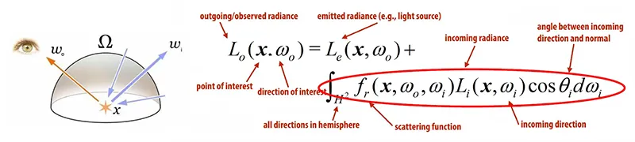
这个方程揭示了渲染的规律。
Global Illumination: Billions of Light Source
全球照明：数十亿光源
{kind=link}
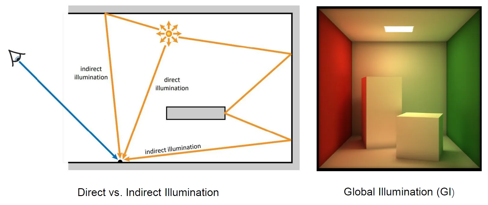
然而，要计算渲染方程的积分可不容易，现实生活中的反射有无数次。
Global Illumination is Matter for Gaming
全局照明对游戏很重要
{kind=link}
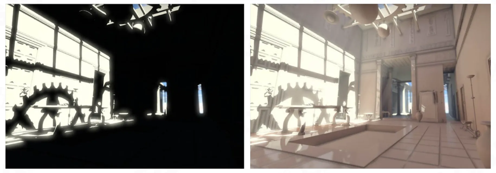
游戏中要加上一个全局照明以近似周围环境反射而来的光照效果。
Monte CarloIntegration
蒙特卡洛一体化
{kind=link}
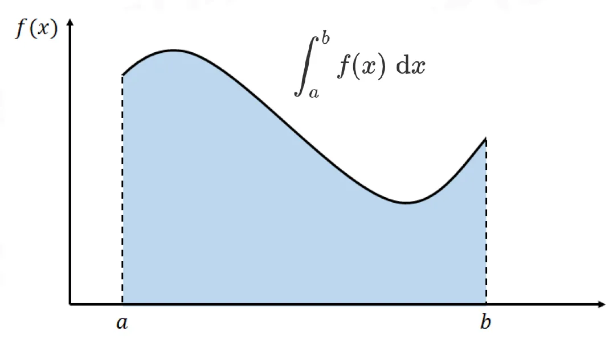
-
How to solve an integral, when it's too hard to solve it analytically?
当一个积分很难解析求解时，如何求解它？
{kind=link}
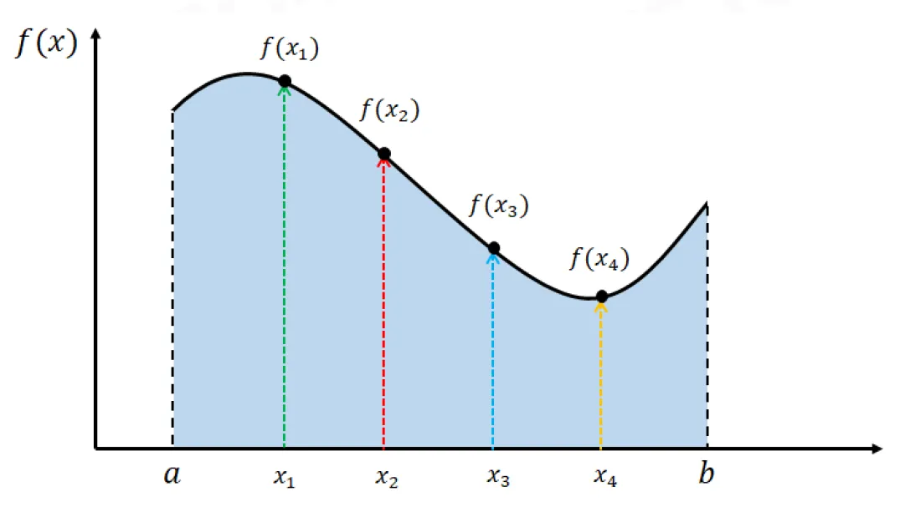
-
Approximate integral with the average of randomly sample values
随机样本值平均值的近似积分
Monte Carlo Ray Tracing (Offline)
蒙特卡罗射线追踪（离线）
{kind=link}
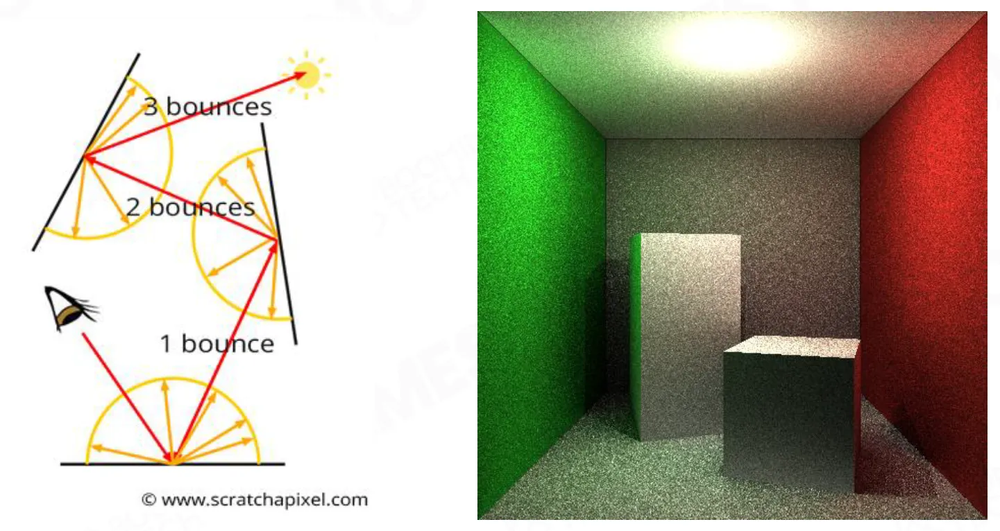
使用蒙特卡洛算法求解渲染方程中的积分。
Sampling is the Key
采样是关键
-
Noise decreases as the number of samples per pixel increases. The top left shows 1sample per pixel, and doubles from left to right each square.
噪声随着每像素采样数的增加而降低。左上角显示每个像素 1 个样本，每个方格从左到右加倍。
{kind=link}
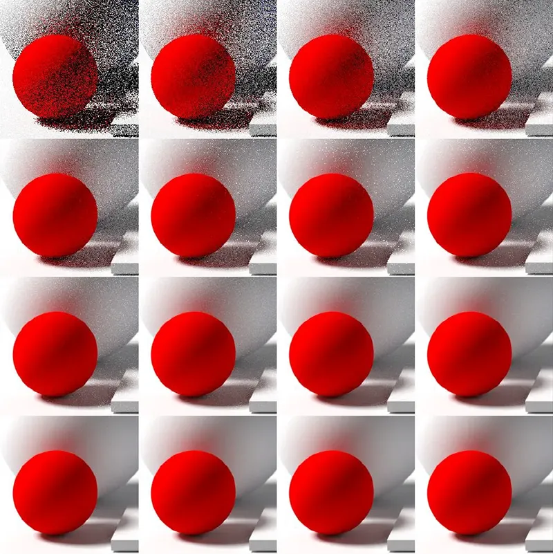
Sampling : Uniform Sampling
取样：均匀取样
{kind=link}
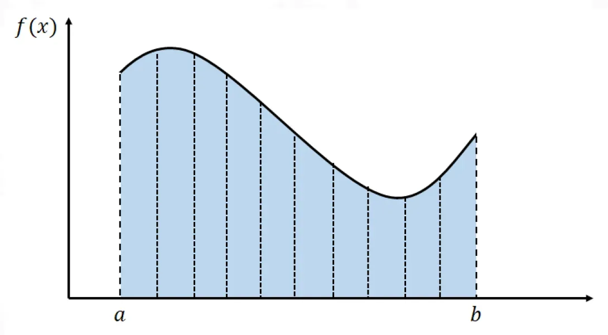
-
We are doing uniform random sample, so we have factor here
我们正在进行均匀随机采样，因此这里有因子
Probability Distribution Function
概率分布函数
Probability Distribution Function
概率分布函数
-
Describes the relative likehood for this random variable to take on a given value
描述此随机变量取给定值的相对可能性
-
Higher means more possible to be chosen
更高意味着更有可能被选择
Importance Sampling
重要性采样
The PDF can be arbitrary, but which is the best?
PDF 可以是任意的，但哪个是最好的？
{kind=link}
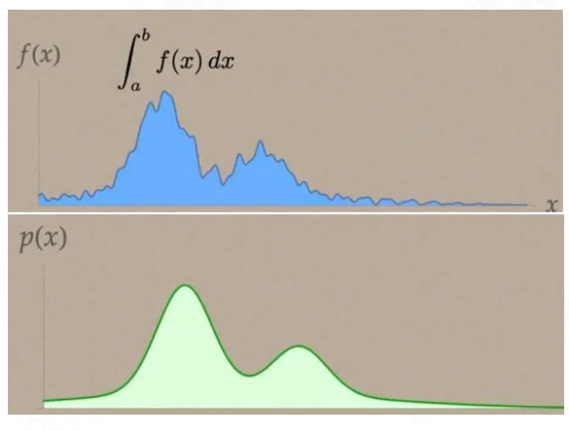
Importance Sampling : Best PDF for Rendering?
重要性采样：最佳的 PDF 渲染？
-
Rendering equation:
渲染方程式：
-
Monte Carlo Integration:
蒙特卡洛积分：
-
What's our f(x)?
-
What's our pdf?
- Uniform:
- Other pdf? (cosine-weight, GGX)（余弦权重，GGX）
Importance Sampling : PDF is Matter
重要性采样：PDF 很重要
{kind=link}
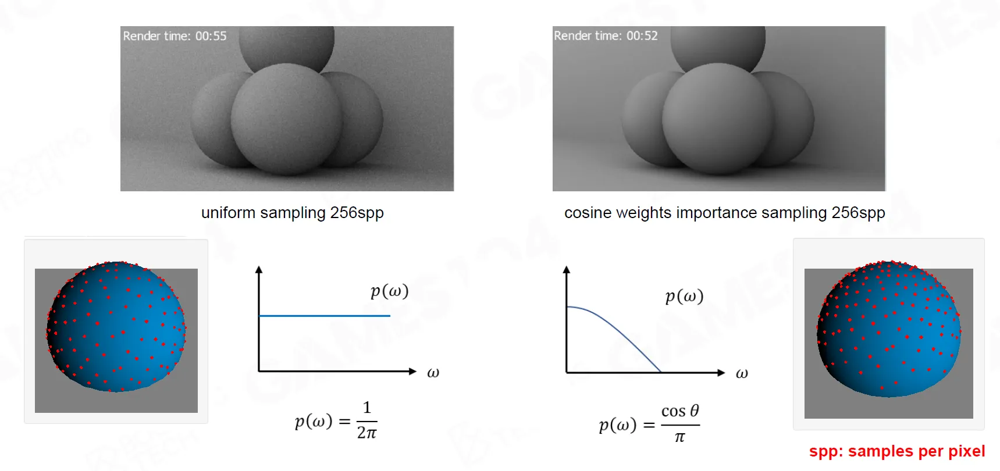
重要性采样比均匀采样渲染出的效果更好。
Importance Sampling: Cosine and GGX PDF
重要性采样：余弦和 GGX PDF
{kind=link}
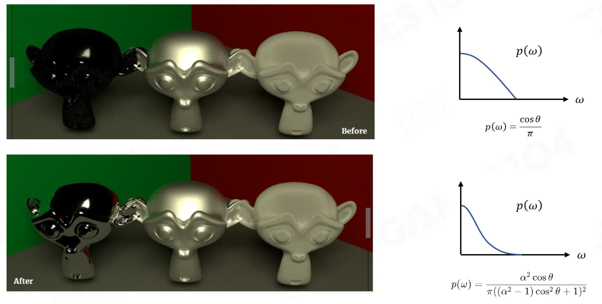
换一种 PDF 会产生不同的渲染效果。
Reflective Shadow Maps (RSM, 2005)
Let’s inject light in. (Photon Mapping?)
反射阴影贴图（RSM，2005）
让我们注入光线。（光子映射？）
-
Each pixel on the shadow map is a indirect light source
阴影贴图上的每个像素都是间接光源
{kind=link}
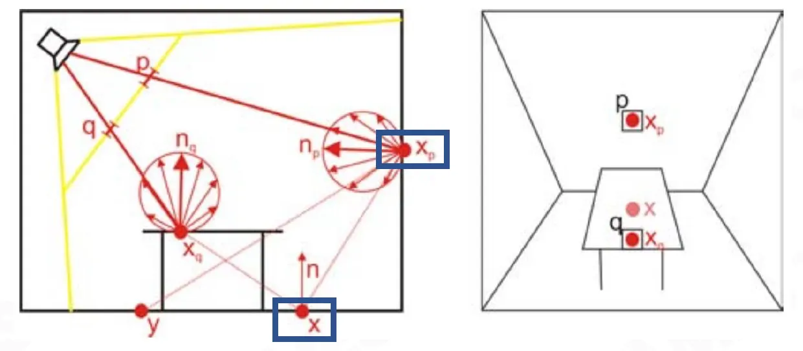
-
How the RSM pixel illuminates position ?
RSM 像素 如何照亮位置 ？
-
The indirect irradiance at a surface point can be approximated by summing up the illumination due to all pixel lights.
表面点 处的间接辐照度可以通过将所有像素光的照度相加来近似。
-
Do not consider occlusion.
不要考虑遮挡。
{kind=link}
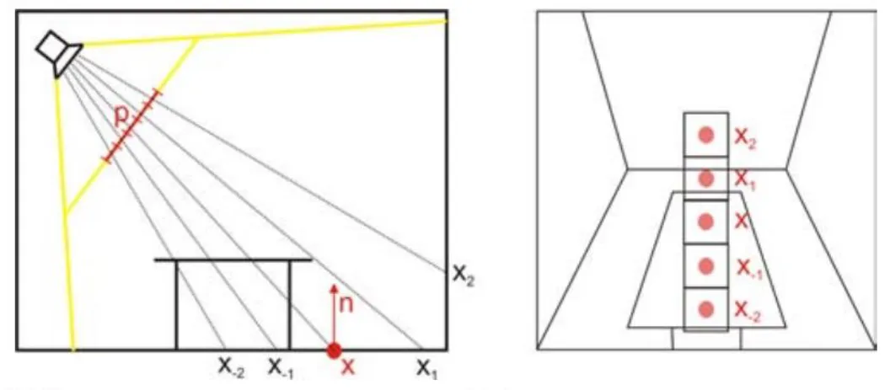
Cone Tracing with RSM
使用 RSM 进行锥体追踪
-
Gathering Indirect Illumination
收集间接照明
-
random sampling RSM pixels
随机采样 RSM 像素
-
precompute such a sampling pattern and reuse it for all indirect light computations
预先计算这样的采样模式，并将其重新用于所有间接光计算
-
400samples were sufficient
400 个样本就足够了
-
use Poisson sampling to obtain a more even sample distribution
使用泊松采样获得更均匀的样本分布
-
-
{kind=link}
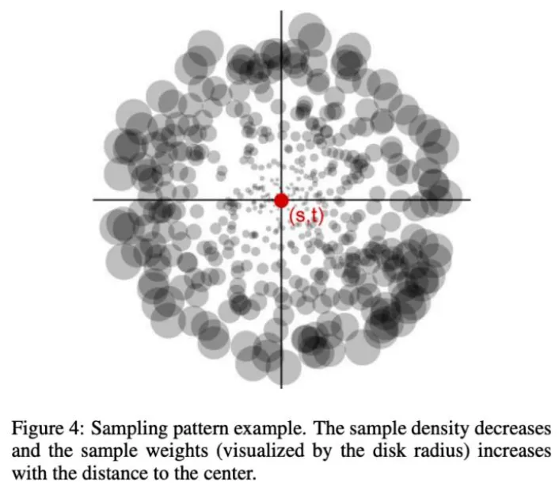
Sampling pattern example. The sample density decreases and the sample weights (visualized by the disk radius) increases with the distance to the center.
采样模式示例。随着到中心的距离的增加，样品密度降低，样品重量（通过圆盘半径显示）增加。
Acceleration with Low-Res Indirect Illumination
低分辨率间接照明加速
-
Compute the indirect illumination for a low resolution image
计算低分辨率图像的间接照明
-
For each pixel on full resolution:
对于全分辨率的每个像素：
-
get its four surrounding low-res samples
获取其四个周围的低分辨率样本
-
validate by comparing normal and world space position
通过比较正常空间位置和世界空间位置进行验证
-
bi-linear interpolation
双线性插值
-
-
Recompute the left (red pixels)
重新计算左侧（红色像素）
{kind=link}
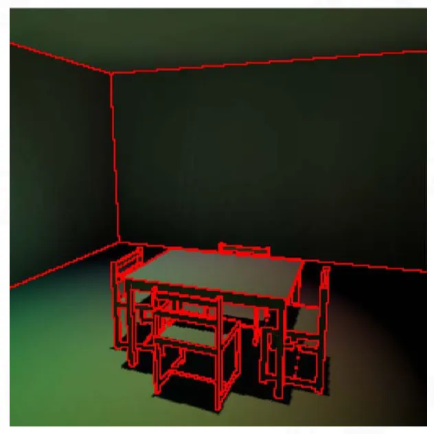
Gears of War 4, Uncharted 4, The Last of US, etc.
《战争机器 4》、《神秘海域 4》、“最后的美国”等
{kind=link}
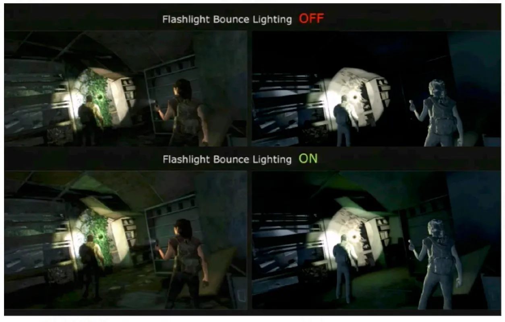
Thanks, RSM
Cool Ideas
很酷的想法
-
Easy to be implemented
易于实施
-
Photon Injection with RSM
RSM 的光子注入
-
Cone sampling in mipmap
mipmap 中的圆锥采样
-
Low-res Indirect illumination with error check
低分辨率间接照明，带错误检查
Cons
缺点
-
Single bounce
单次反弹
-
No visibility check for indirect illumination
间接照明不进行能见度检查
{kind=link}
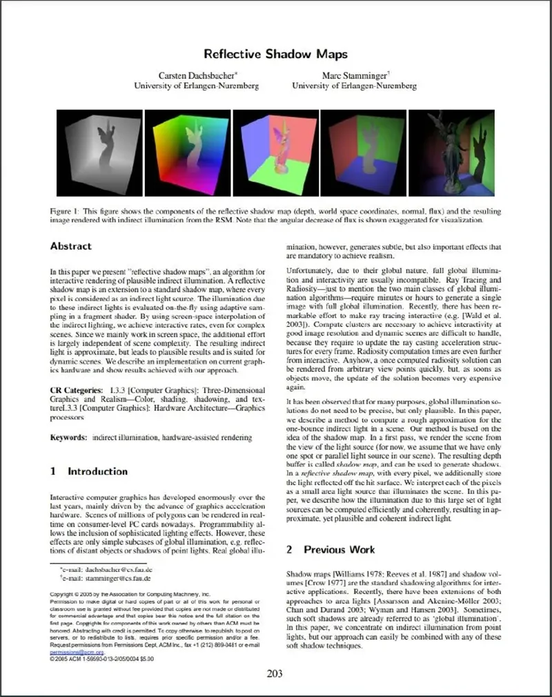
Light Propagation Volumes (LPV)
光传播体积（LPV）
First introduced in CryEngine 3（SIGGRAPH 2009）
首次引入 CryEngine 3（SIGGRAPH 2009）
{kind=link}
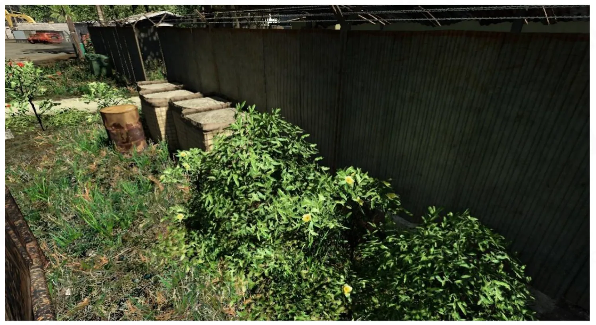
-
Key Idea
核心思想
-
Use a 3D grid to propagate radiance from directly illuminated surfaces to anywhere else
使用 3D 网格将辐射从直接照射的表面传播到其他任何地方
-
{kind=link}
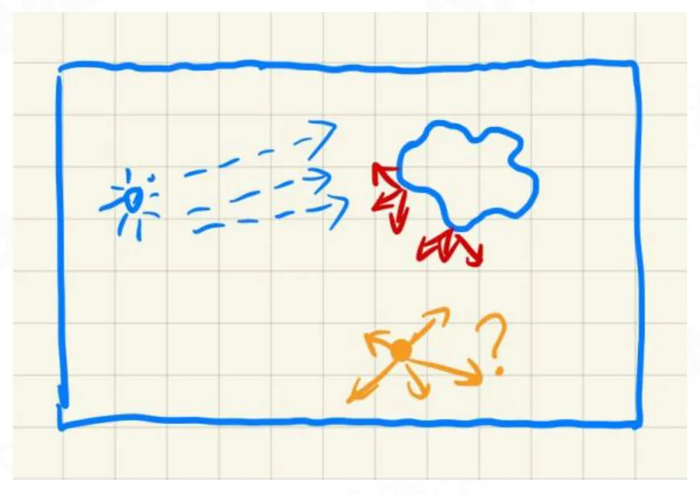
Steps
步骤
-
Generation of radiance point set scene representation
辐射点集场景表示的生成
-
Injection of point cloud of virtual light sources into radiance volume
将虚拟光源的点云注入辐射体积
-
Volumetric radiance propagation
体积辐射传播
-
Scene lighting with final light propagation volume
具有最终光传播量的场景照明
Reflective shadow map generation → Radiance injection → Radiance propagation → Scene lighting
反射阴影贴图生成→辐射注入→辐射传播→场景照明
“Freeze” the Radiance in Voxel
“冻结”体素中的光芒
Light Injection
光注入
-
Pre-subdivide the scene into a 3D grid
将场景预细分为 3D 网格
-
For each grid cell, find enclosed virtual light sources
对于每个网格单元，找到封闭的虚拟光源
-
Sum up their directional radiance distribution
总结它们的方向辐射分布
-
Project to first 2 orders of SHs (4 in total)
前 2 个 SH 订单的项目（共 4 个）
{kind=link}
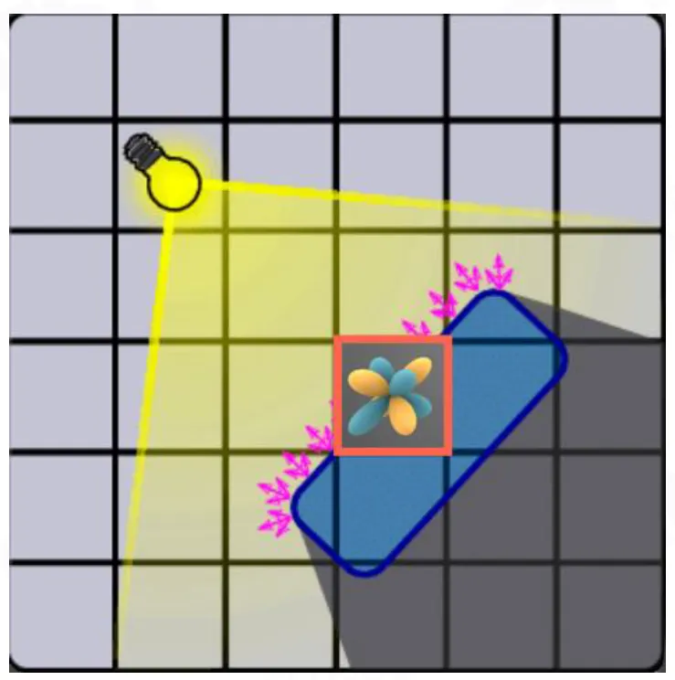
Radiance Propagation
辐射传播
-
For each grid cell, collect the radiance received from each of its 6 faces
对于每个网格单元，收集从其 6 个面中的每一个面接收到的辐射
-
Sum up, and again use SH to represent
总结一下，再次用 SH 表示
-
Repeat this propagation several times till the volume becomes stable
重复此传播几次，直到体积稳定
{kind=link}
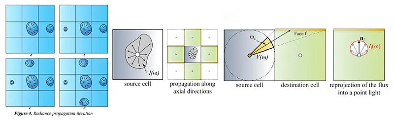
Light with “Limit Speed”？
“限速”灯
{kind=link}
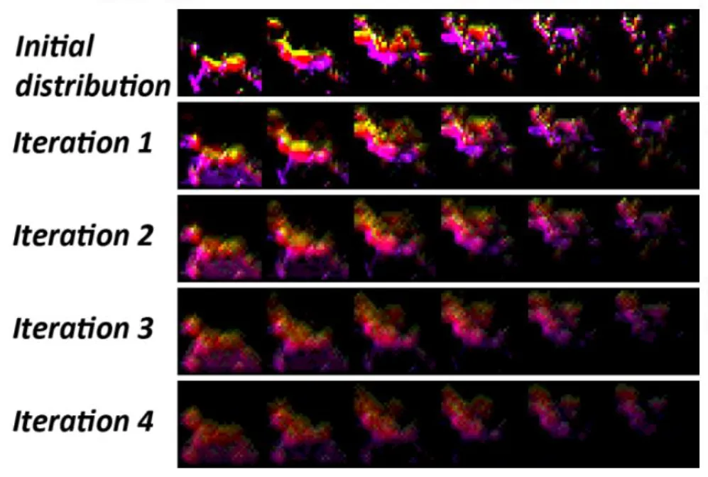
Sparse Voxel Octree for Real-time Global Illumination (SVOGI)
稀疏体素八叉树用于实时全局照明（SVOGI）
Voxelization Pass
体素化通行证
{kind=link}
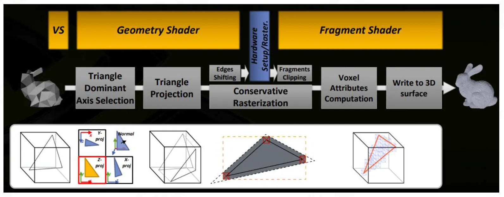
Collect Surface Voxels
收集表面体素
{kind=link}
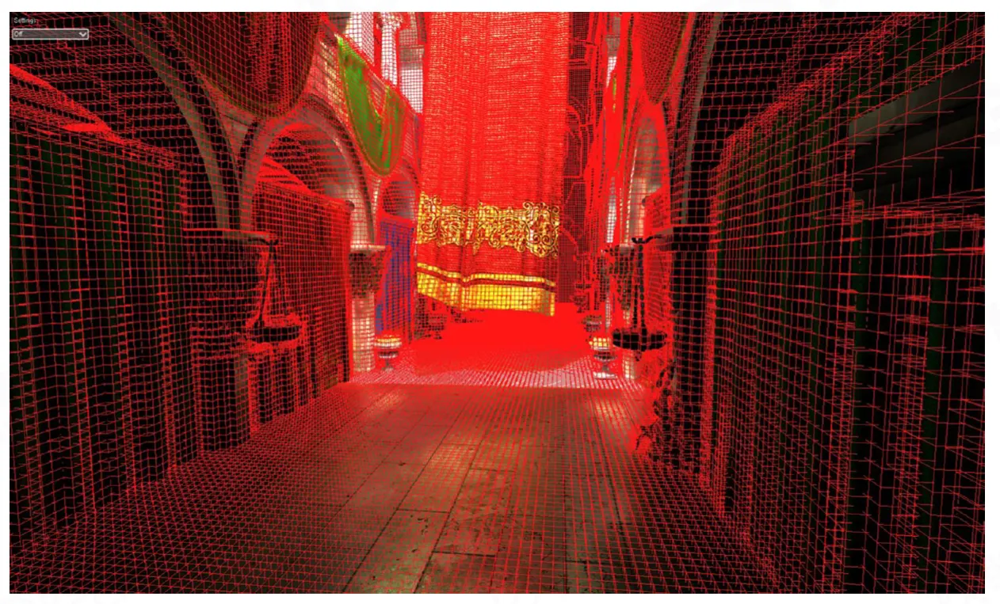
{kind=link}
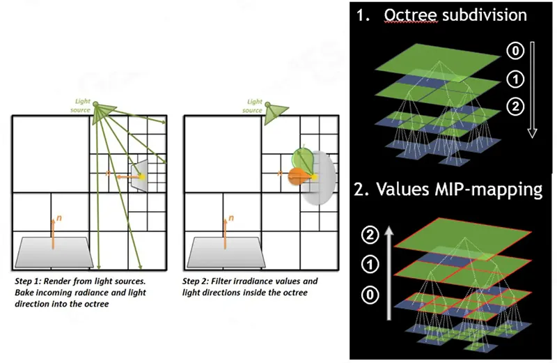
-
Inject Irradiance into voxels from light
从光线向体素中注入辐照度
-
Filter irradiance inside the octree
八叉树内部的过滤辐照度
Shading with Cone Tracing in Voxel Tree
体素树中的圆锥体跟踪着色
Pass 2 from the camera
从相机中传 2
-
Emit some cones based on diffuse + specular BRDF
基于漫反射 + 镜面反射 BRDF 发射一些锥体
-
Query in octree based on the (growing) size of the cone
基于圆锥体（增长）大小的八叉树查询
{kind=link}
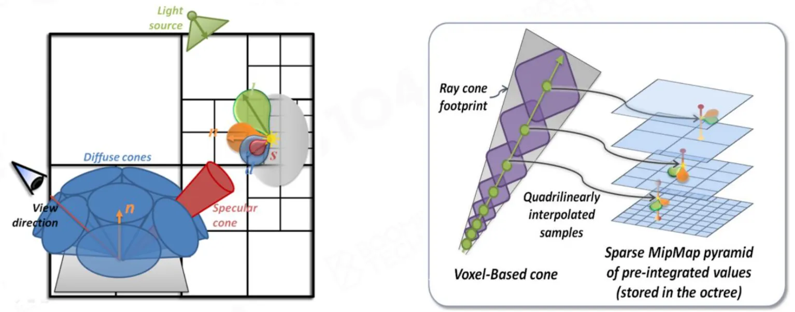
Voxelization Based Global Illumination (VXGI)
基于体素化的全局照明（VXGI）
{kind=link}
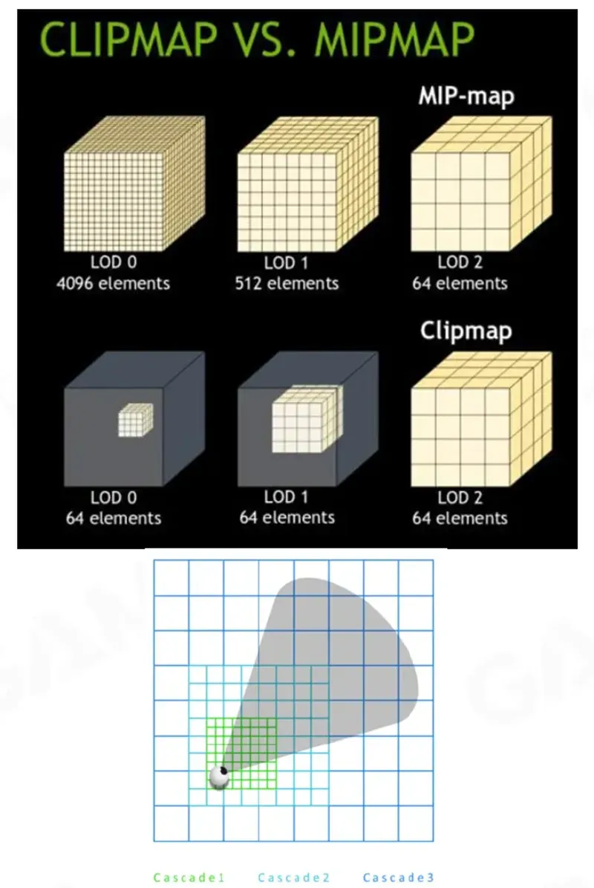
-
Store the voxel data in clipmaps
将体素数据存储在 clipmap 中
-
Multi-resolution texture
多分辨率纹理
-
Regions near the center have higher spatial resolution
中心附近的区域具有更高的空间分辨率
-
Seems to map naturally to cone tracing needs
似乎很自然地映射到锥体跟踪需求
-
-
A clipmap is easier to build than SVO
clipmap 比 SVO 更容易构建
-
No nodes, pointers etc., handled by hardware
没有由硬件处理的节点、指针等
-
-
A clipmap is easier to read from
Clipmap 更容易阅读
-
Clipmap size is (64…256)^3 with 3…5 levels of detail
Clipmap 大小为（64…256）^3，具有 3…5 个细节级别
-
16…32 bytes per voxel => 12 MB … 2.5 GB of video memory required
每个体素 16…32 字节=>12 MB…需要 2.5 GB 的视频内存
-
Voxel Update and Toroidal Addressing
体素更新和环形寻址
-
A fixed point in space always maps to the same address in the clipmap
空间中的固定点总是映射到剪贴图中的同一地址
-
The background shows texture addresses:
frac(worldPos.xy / clipmapSize.xy)背景显示纹理地址：
frac(worldPos.xy / clipmapSize.xy)
{kind=link}
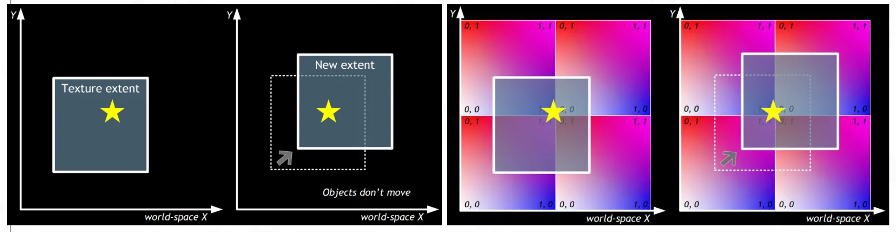
{kind=link}
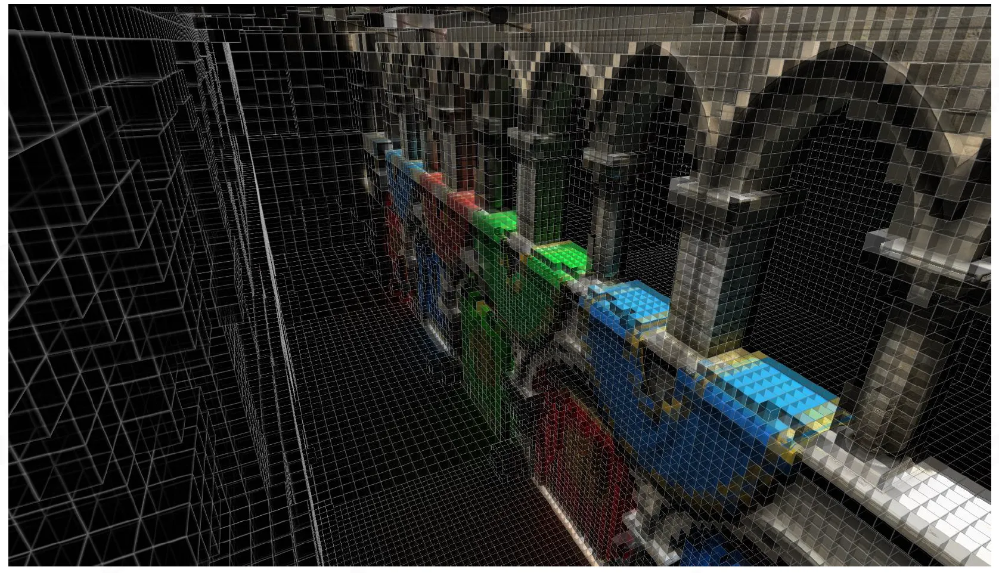
Voxelization for Opacity
不透明度的体素化
-
We have a triangle and a voxel
我们有一个三角形和一个体素
-
Select the projection plane that yields the biggest projection area
选择产生最大投影面积的投影平面
-
Rasterize the triangle using MSAA to compute one coverage mask per pixel
使用 MSAA 对三角形进行光栅化，以计算每个像素的一个覆盖掩模
-
Take the MSAA samples and reproject them onto other planes
采集 MSAA 样本并将其重新投影到其他平面上
-
Repeat that process for all covered samples
对所有覆盖的样本重复该过程
-
Thicken the result by blurring all the reprojected samples
通过模糊所有重新投影的样本来增加结果
{kind=link}
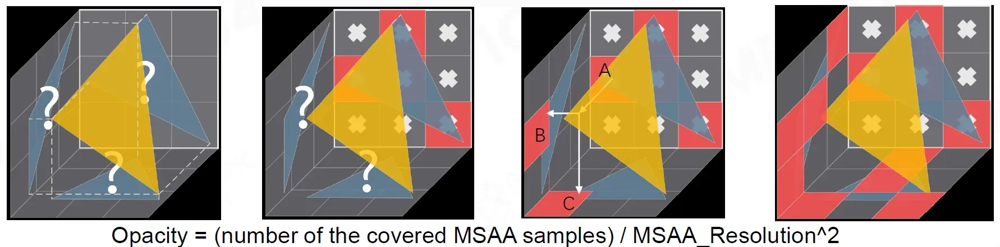
Voxelization: Directional Coverage
体素化：定向覆盖
{kind=link}
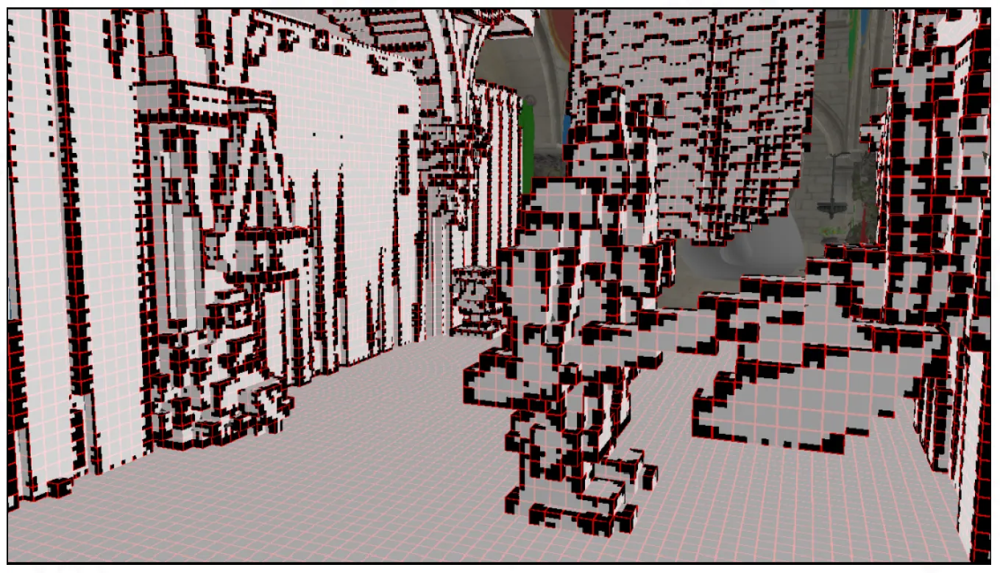
Light Injection
光注入
-
Calculate emittance of voxels that contain surfaces lit by direct lights
计算包含由直射光照亮的表面的体素的发射度
-
Take information from reflective shadow maps (RSM)
从反射阴影图（RSM）中获取信息
{kind=link}
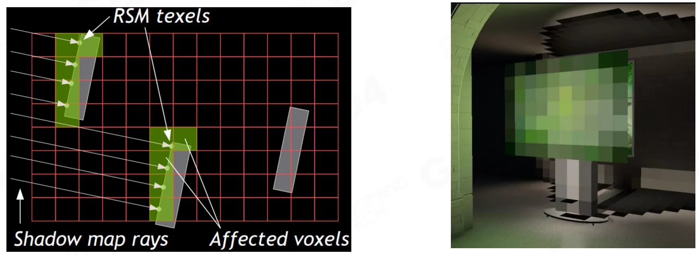
{kind=link}
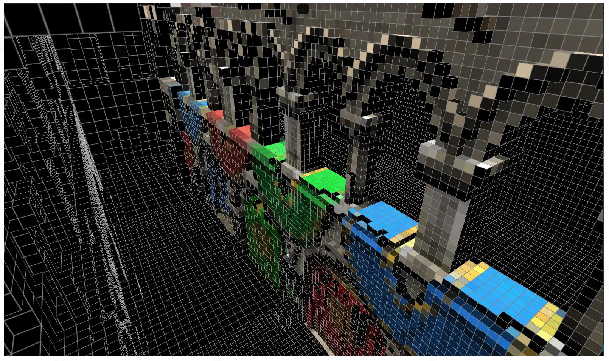
Shading with Cone Tracing
使用圆锥体追踪进行着色
-
generate several cones based on BRDF
基于 BRDF 生成多个锥体
{kind=link}
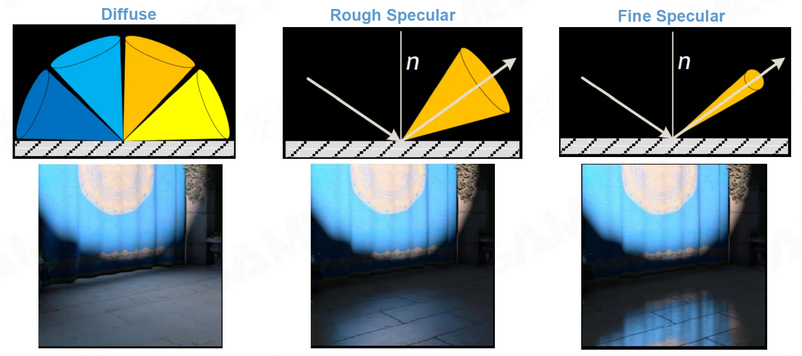
Accumulate Voxel Radiance and Opacity along the Path
沿路径累积体素辐射度和不透明度
{kind=link}
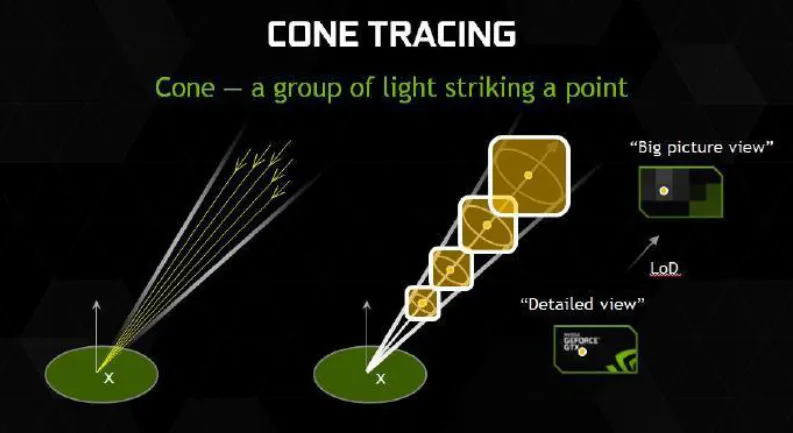
{kind=link}
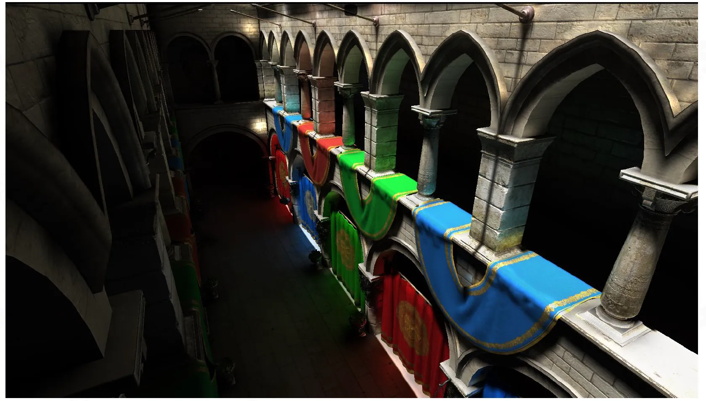
Problems in VXGI
VXGI 中的问题
Incorrect Occlusion (opacity)
遮挡不正确（不透明）
-
naively combine the opacity with alpha blending.
天真地将不透明与阿尔法混合结合起来。
Light Leaking
漏光
-
when occlusion wall is much smaller than voxel size
当闭塞壁远小于体素尺寸时
{kind=link}
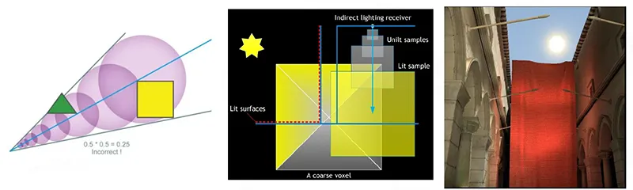
Screen Space Global Illumination (SSGI)
屏幕空间全局照明（SSGI）
General Idea
总体思路
-
Reuse screen-space data
重复使用屏幕空间数据
{kind=link}
Radiance Sampling in Screen Space
屏幕空间中的辐射采样
For each fragment:
对于每个片段：
-
Step 1: compute many reflection rays
步骤 1：计算许多反射光线
-
Step 2: march along ray direction (in depth gbuffer)
步骤 2：沿射线方向行进（在深度 gbuffer 中）
-
Step 3: use color of hit pointas indirect lighting
步骤 3：使用目标点的颜色作为间接照明
{kind=link}
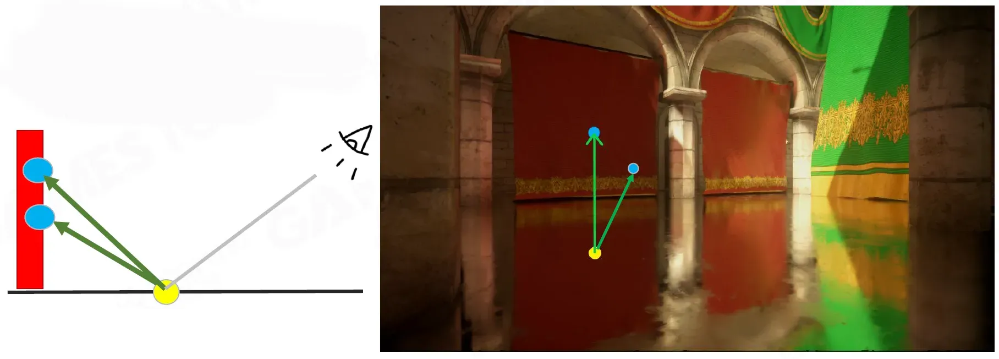
Linear Raymarching
线性射线推进
-
General Steps
一般步骤
-
Step forward at a fixed step size
以固定步长向前迈进
-
At each step, check depth value
每一步，检查深度值
-
-
Features
特征
-
Fast
快速
-
May skip thin objects
可能跳过薄物体
-
{kind=link}
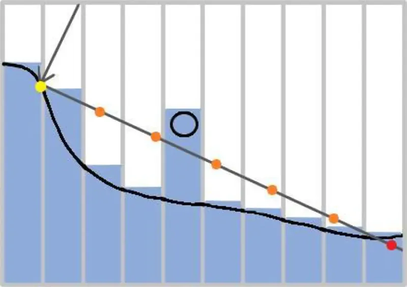
Hierachical Tracing
层次追踪
-
Generate min-depth mipmap (pyramid)
生成最小深度 mipmap（金字塔）
-
Stackless ray walk of min-depth mipmap
最小深度 mipmap 的无堆叠射线行走
{kind=link}
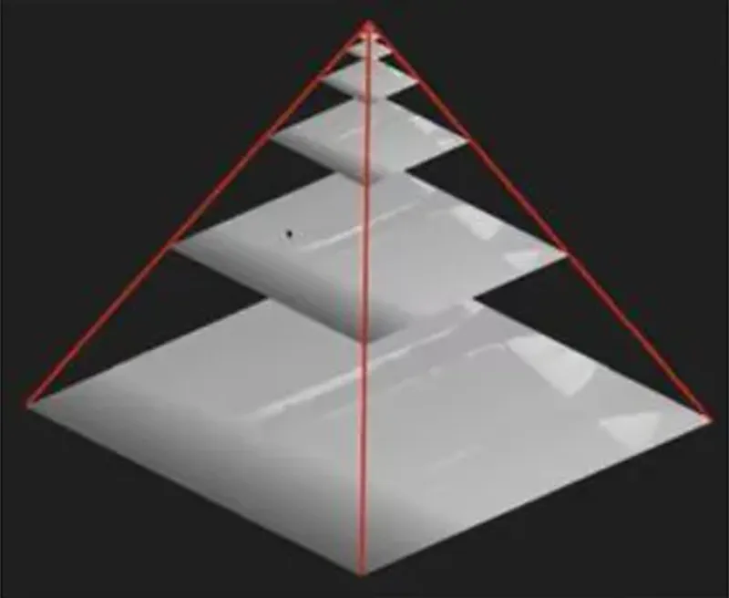
level = 0;
while(level > -1)
{
stepcurrentcell();
if (above z plane) level++;
if (below z plane) level--;
}{kind=link}
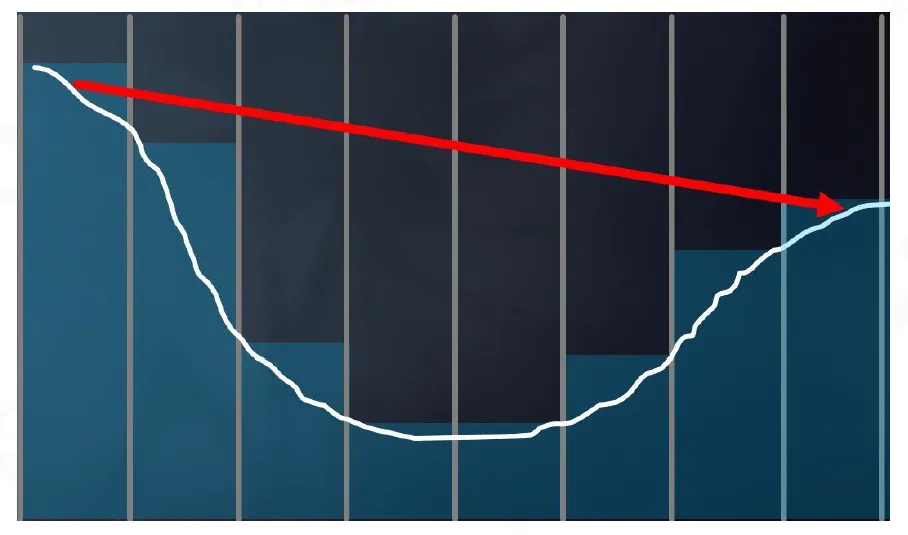
Ray Reuse among Neighbor Pixels
相邻像素间的光线复用
-
Store hitpoint data
存储命中点数据
-
Assume visibility is the same between neighbors
假设邻居之间的能见度相同
-
Regard ray to neighbor's hitpointas valid
将邻居的 hitpoint 视为有效
{kind=link}
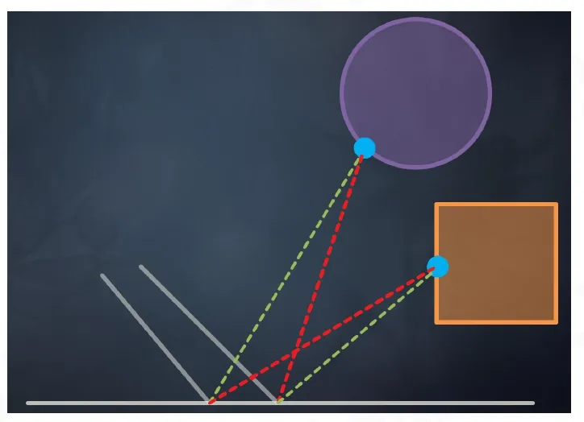
Cone Tracing with Mipmap Filtering
基于 Mipmap 滤波的圆锥跟踪
Estimate footprintof a coneat hit point
估算锥形撞击点的足迹
-
roughness
粗糙度
-
distance to hit
击中距离
Sample the color mipmap
对彩色 mipmap 进行采样
-
mip level is determined by footprint
mip 级别由足迹决定
Pre-filter color mipmap (pyramid)
预过滤彩色 mipmap（金字塔）
{kind=link}
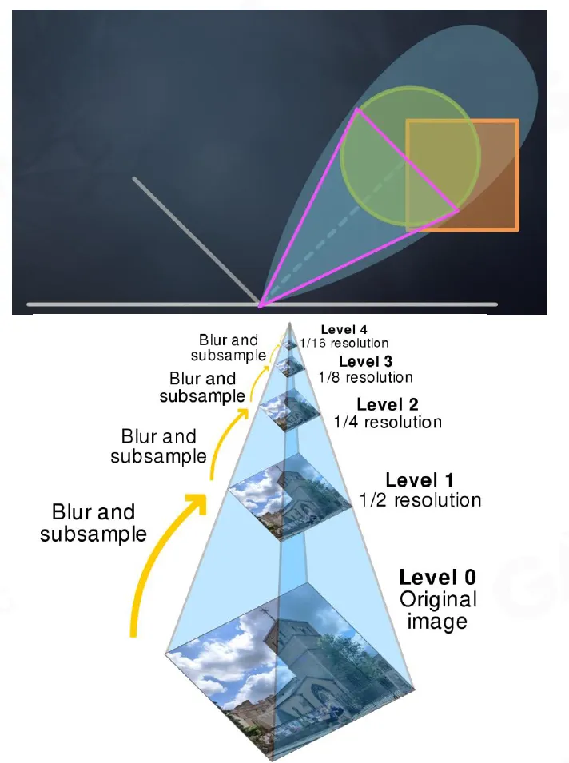
SSGI Summary
SSGI 总结
-
Pros:
优点：
-
Fast for glossy and specular reflections
快速实现光泽和镜面反射
-
Good quality
质量好
-
No occlusion issues
无遮挡问题
-
-
Cons:
缺点：
-
Missing information outside screen
屏幕外信息缺失
-
Affects of incorrect visibility of neighbor ray reuse
相邻射线重用可见性不正确的影响
-
{kind=link}
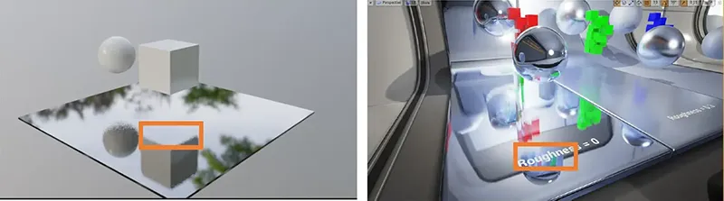
Unique Advantages of SSGI
SSGI 的独特优势
-
Easy to handle close contact shadow
易于处理近距离接触阴影
-
Precise hit point calculation
精确的命中点计算
-
Decouple from scene complexity
与场景复杂性解耦
-
Handle dynamic objects
处理动态对象
Lumen
Lumen 是一个实时全局光照系统，由 Epic Games 开发，用于其虚幻引擎（Unreal Engine）。它旨在提高游戏和其他实时应用中的光照效果的真实感。Lumen 可以动态地计算光线的传播、反射和折射，无需事先烘焙光照贴图，因此能更好地适应场景的变化，比如光线源的移动或物体的位置改变。它通过实时计算来模拟复杂的光照效果，比如间接光和反射，使得视觉效果更加自然和沉浸。
Ray Traces are slow
光线追踪很慢
-
Can only afford 1/2 ray per pixel
每像素只能提供 1/2 射线
-
But quality GI needs hundreds
但高质量的 GI 需要数百个
{kind=link}
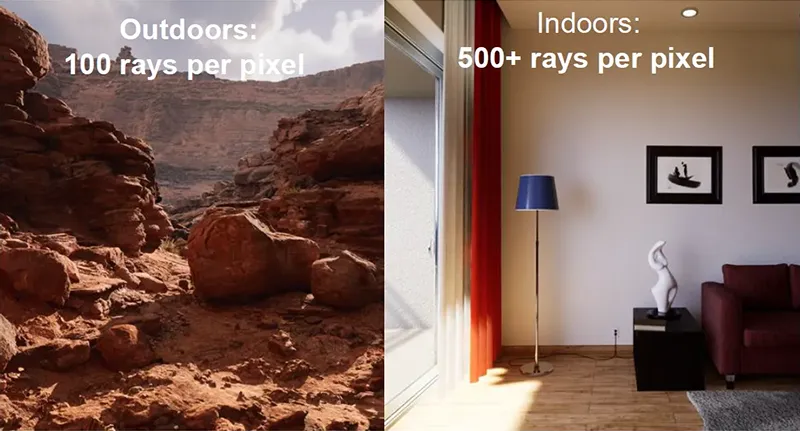
Sampling is hard
取样很困难
Previous real-time work: Irradiance Fields
以前的实时工作：辐照度场
-
Problems:
问题：
-
Leaking and over-occlusion
渗漏和过度堵塞
-
Probe placement
探头放置
-
Slow lighting update
照明更新缓慢
-
Distinctive flat look
独特的扁平外观
-
Previous real-time work: Screen Space Denoiser
以前的实时工作：屏幕空间去噪器
-
Problems:
问题：
-
Too noisy in many difficult indoor cases
在许多困难的室内环境中噪音太大
-
Noise is not constant.
噪音不是恒定的。
-
{kind=link}
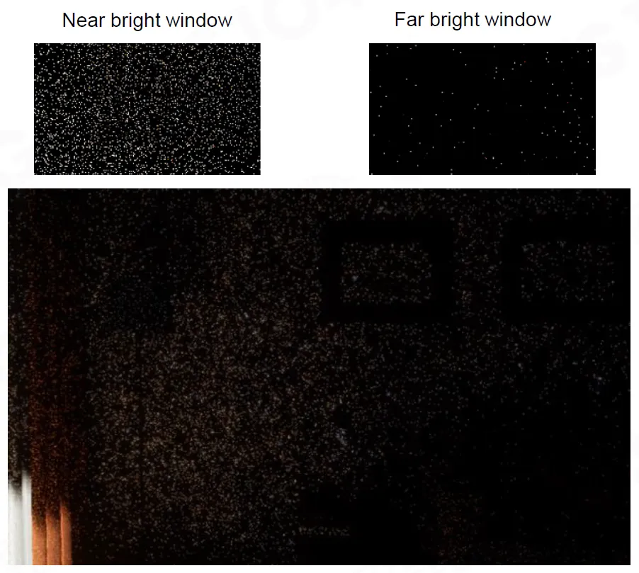
Low-res filtered scene space probes lit full pixels
低分辨率滤波场景空间探测器照亮了全像素
{kind=link}
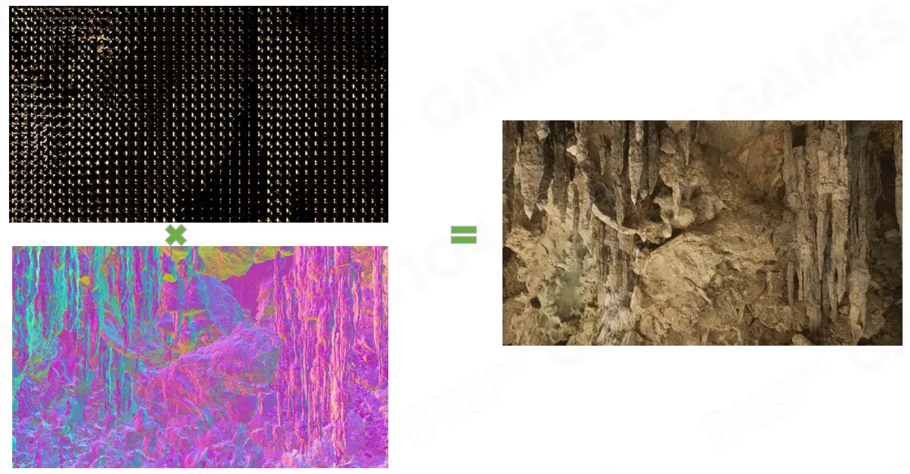
Phase 1 : Fast Ray Trace in Any Hardware
阶段 1：任何硬件中的快速光线追踪
Signed Distance Field (SDF)
签名距离字段（SDF）
What is SDF
-
The distance to the nearest surface at every point
每个点到最近曲面的距离
-
Inside regions store negative distance (signed)
内部区域存储负距离（带符号）
-
Distance = 0 is the surface
距离 = 0 是曲面
{kind=link}
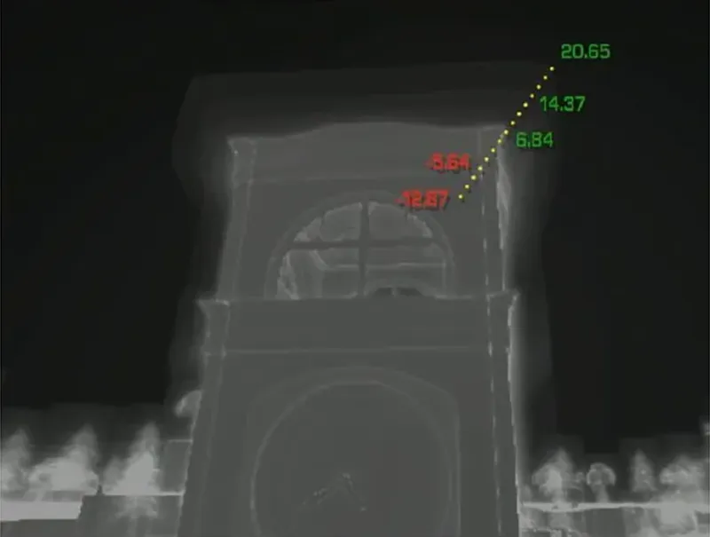
Per-Mesh SDF
每网格 SDF
Store SDF of the whole scene is expensive
整个场景的商店 SDF 都很贵
Generated for each mesh
为每个网格生成
-
Resolution based on mesh size
基于网格大小的分辨率
-
Embree point query
Embree 积分查询
-
Trace rays and count triangle back faces for sign ( more than 25% hit back is negative)
追踪光线并计算标志的三角形背面（超过 25% 的回射为负）
{kind=link}
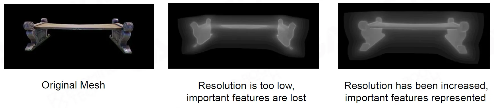
-
Original Mesh
原始网格
-
Resolution is too low, important features are lost
分辨率太低，重要功能丢失
-
Resolution has been increased, important features represented
分辨率已提高，重要功能已呈现
SDF for Thin meshes
用于薄网格的 SDF
-
Half voxel expand to fix leaking
半体素扩展以修复泄漏
-
Lost contact shadows due to surface bias
表面偏移导致接触阴影丢失
-
Over occlusion better than leaking
过度堵塞比泄漏好
-
{kind=link}
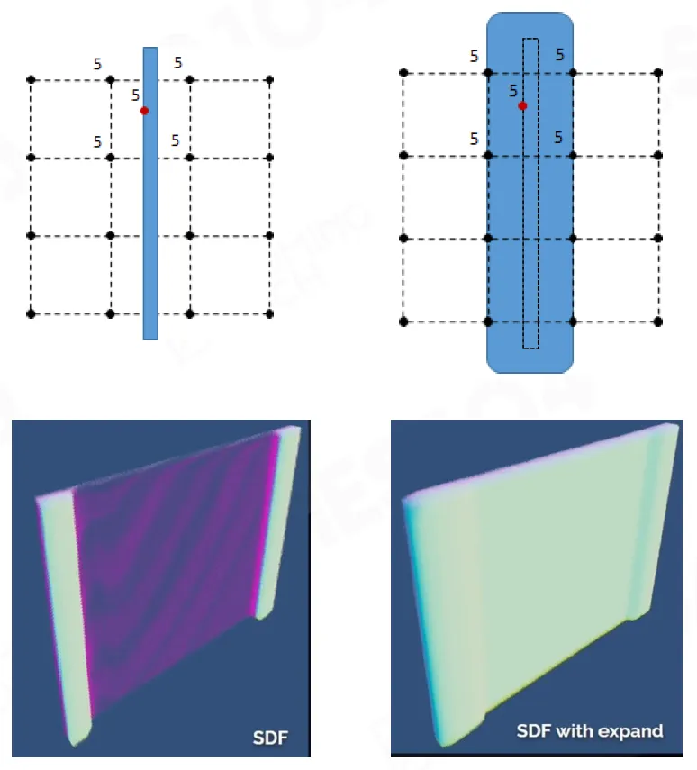
Ray Tracing with SDF
使用 SDF 进行光线追踪
Ray intersection skips through empty space based on distance to surface
射线交点根据到曲面的距离跳过空白空间
-
Safe and fast
安全快捷
-
Each time at , just travel distance
每次在 时，只需行进 距离
{kind=link}
Cone Tracing with SDF (ie. Soft Shadow)
使用 SDF 进行圆锥体跟踪（即软阴影）
{kind=link}
Sparse Mesh SDF
稀疏网格 SDF
Divides the Mesh SDF into bricks
将网格 SDF 划分为块
-
Define a max_encode_distance
定义 max_encode 距离
-
Invalid if ∀ sdf(brick) > max_encode_distance
如果 ∀sdf(brick) > max_encode_distance，则无效
-
-
IndirectionTable store the index of each brick
IndirectionTable 存储每块砖的索引
{kind=link}
{kind=link}
Mesh SDF LoD
网状 SDF LoD
-
Every frame GPU gathers requests
每一帧 GPU 都会收集请求
-
CPU download requests and streams pages in/out
CPU 下载请求和流式页面输入/输出
-
3mips are generated
生成 3 个 MIP
-
Lowest resolution always loaded and the other 2streamed
始终加载最低分辨率，其他 2 个分辨率为流式传输
-
{kind=link}
Sparse Mesh SDF
稀疏网格 SDF
{kind=link}
Ray Tracing Cost in Real Scene
真实场景中的光线追踪成本
{kind=link}
Trace camera rays and visualize the number of steps
追踪相机光线并可视化步数
Many Objects along Each Ray
每条射线上有许多物体
{kind=link}
Number of hit objects along each ray
沿每条射线的命中物体数量
Global SDF
全球 SDF
-
Global SDF is inaccurate near surface
全球 SDF 在地表附近不准确
-
Sample object SDFs near start of cone, global SDF for the rest
在圆锥体起点附近采样对象 SDF，其余部分为全局 SDF
{kind=link}
Ray Tracing with Global SDF
使用全局 SDF 进行光线追踪
Massively reduces tracing cost on overlapping objects
大幅降低重叠对象的跟踪成本
{kind=link}
Cache Global SDF around Camera
在相机周围缓存全局 SDF
-
4 clipmaps centered around camera
4 张以相机为中心的剪贴画
-
Clipmaps are scrolled with movement
Clipmap 随着移动而滚动
-
Distant clipmaps updated less frequently
远处的 clipmap 更新频率较低
-
Also sparsely stored (~16x memory saving)
存储也很稀疏（约节省 16 倍内存）
{kind=link}
Phase 2 : Radiance Injection and Caching
阶段 2：辐射注入和缓存
Mesh card –orthogonal camera on 6-Axis Aligned directions
网格卡——6 轴对齐方向上的正交相机
class FLumenCard
{
FLumenCardOBB LocalOBB;
FLumenCardOBB WorldOBB;
uint8 AxisAliqnedDirectionIndex;
}{kind=link}
{kind=link}
Generate Surface Cache
生成 Surface 缓存
Two Passes
两个步骤
Pass 1：Card capture
步骤 1：卡捕获
-
Fix texel budget per frame (512 x 512)
固定每帧的纹理像素预算（512 x 512）
-
Sort by distance to camera and GPU feedback
按距离相机和 GPU 反馈排序
-
Capture resultion depends on card projection on screen
捕获结果取决于屏幕上的卡片投影
{kind=link}
Pass 2：Copy cards to surface cache and compress
步骤 2：将卡片复制到表面缓存并压缩
{kind=link}
4096 x 4096 Surface Cache Atlas
| 贴图 | 颜色通道 | 纹理压缩 | 缓存大小 |
|---|---|---|---|
| Albedo | RGB8 | BC7 | 16mb |
| Opacity | R8 | BC4 | 8mb |
| Depth | R16 | - | 32mb |
| Normal | Hemisphere RG8 | BC4 | 16mb |
| Emissive | RGB Float16 | BCGH | 16mb |
compress from 320mb to 88mb
从 320mb 压缩到 88mb
static FLumenSurfaceLayerConfig Configs[(uint32)ELumenSurfaceCacheLayer::MAX]
{
{TEXT("Depth"), PF_G16, PF_Unknown, PF_Unknown, FVector(1.af,0.0f,0.0f)},
{TEXT("Albedo"), PF_R8G8B8A8,PF_BC7, PF_R32G32B32A32_UINT, FVector(0.0f,0.0f,0.0f)},
{TEXT("Opacity"), PF_G8, PF_BC4, PF_R32G32B32A32_UINT, FVector(1.0f,0.0f,0.0f)},
{TEXT("Normal"), PF_R8G8, PF_BC5, PF_R32G32A32_UINT, FVector(0.0f,0.0f,0.0f)},
{TEXT("Emissive"), PF_BC4, PF_FloatR11G11B10, PF_BC6H, PF_R32G32B32A32_UINT, FVector(0.0f,0.0f,0.0f)}
};View Dependent Per-Object Card Resolution
查看每对象卡分辨率
128 x 128 physical pages in a 4096 x 4096 atlas
4096 x 4096 图集中的 128 x 128 个物理页面
Card capture res >= 128 x 128
卡捕获分辨率 >= 128 x 128
-
Split into multiple 128 x 128 physical pages
拆分为多个 128 x 128 物理页面
Card capture res < 128 x 128
卡捕获分辨率 < 128 x 128
-
Sub-allocate from a 128 x 128 physical page
从 128 x 128 物理页面进行子分配
{kind=link}
How can we "freeze" lighting on Surface Cache
我们如何在 Surface Cache 上“冻结”照明
How to compute lighting on hit?
如何计算命中时的光照？
-
Is the pixel under the shadow
像素是否位于阴影之下
-
How can we handle multi-bounce
我们如何处理多次反弹
Lighting Cache Pipeline
照明缓存管道
{kind=link}
Direct Lighting
直接照明
-
Divide 128 x 128 page into 8 x 8 tiles
将 128 x 128 页划分为 8 x 8 个图块
-
Cull lights with 8 x 8 tile
8 x 8 瓷砖装饰灯
-
Select first 8 lights per tile
为每块瓷砖选择前 8 盏灯
-
1bit shadow mask
1bit 荫罩
{kind=link}
One tile can be lited by multilights, the result will be accumlated
一块瓷砖可以被多盏灯照亮，结果会累加
{kind=link}
Global SDF can't sample surface cache
全局 SDF 无法对曲面缓存进行采样
-
no per mesh information, only hit position and normal
无网格信息，仅命中位置和正常
Use voxel lighting to sample
使用体素照明进行采样
{kind=link}
Voxel Clipmapfor Radiance Caching of the Whole Scene
体素剪贴画用于整个场景的辐射缓存
4 level clipmaps of 64x64x64 voxels
64 x 64 x 64 体素的 4 级剪贴图
-
Radiance per 6 directions per voxel
每个体素每 6 个方向的辐射
-
Sample and interpolate 3 directions by normal
通过法线对 3 个方向进行采样和插值
-
Clipmap0 cover 50m^3, voxel size is 0.78m
Clipmap0 覆盖 50m^3，体素大小为 0.78m
-
Store in 3D texture
存储在 3D 纹理中
Clipmapupdate frequency rules
剪贴图更新频率规则
| Clipmap 0 | Clipmap 1 | Clipmap 2 | Clipmap 3 | |
|---|---|---|---|---|
| Start_Frame | 0 | 1 | 3 | 7 |
| Update_interval | 2 | 4 | 8 | 8 |
{kind=link}
Build Voxel Faces by Short Ray cast
通过短光线投射构建体素人脸
-
Trace mesh DF on 6 directions per voxel
在每个体素的 6 个方向上跟踪网格 DF
-
Hit mesh id and hit distance
命中网格 id 和命中距离
-
RayStart = VoxelCenter – AxisDir * VoxelRaidus
-
RayEnd = VoxelCenter + AxisDir * VoxelRaidus
{kind=link}
store hit infro intovisibilty buffer uint32 [Hit distance| Hit object id]
将命中信息存储到可见性缓冲区 uint32 [命中距离|命中对象 id]
Filter Most Object Out by 4x4x4 Tiles
通过 4x4x4 瓷砖过滤掉大部分对象
{kind=link}
Inject light into clipmap
将光线注入 clipmap
-
Clear all voxel lighting in entire Clipmap
清除整个 Clipmap 中的所有体素照明
-
Compact all valid VisBuffer in Clipmap
压缩 Clipmap 中的所有有效 VisBuffer
-
Sampling FinalLighting from VisBufferand inject lighting
从 VisBuffer 中采样 FinalLighting 并注入照明
{kind=link}
Indirect Lighting
间接照明
-
Place 2 x 2 probes on each tile -each probe cover 4 x 4 texels
在每个瓷砖上放置 2 x 2 个探头，每个探头覆盖 4 x 4 纹理像素
-
Trace 16 rays from hemisphere per probe
每个探测器追踪 16 条来自半球的射线
-
Jitter probe placement and ray directions
抖动探头位置和射线方向
{kind=link}
-
Spatial filtering between probes
探头之间的空间滤波
-
Convert to TwoBandSH (store in half4)
转换为 TwoBandSH（存储在 half4）
{kind=link}
Per-Pixel Indirect Lighting with 4 Probe Interpolation
采用 4 探头插值的每像素间接照明
-
Integrate on pixel -bilinear interpolation of 4 neighbor probes
4 个相邻探针的像素双线性插值集成
{kind=link}
Combine Lighting
组合照明
FinalLighting = (DirectLighting + IndirectLighting) * Diffuse_Lambert(Albedo) + Emissive;
{kind=link}
Ligting Update Strategy
Ligting 更新策略
Fix budget
固定预算
-
1024 x 1024 texels for direct lighting
1024 x 1024 像素用于直接照明
-
512 x 512 texels for indirect lighting
512 x 512 像素用于间接照明
-
Select pages to update based on Priority = LastUsed-LastUpdated
根据优先级 = 上次使用上次更新选择要更新的页面
Priority queue using bucket sort
使用桶排序的优先级队列
-
128 buckets
128 桶
-
Update buckets with priority until reaching budget
优先更新存储桶，直到达到预算
Phase 3: Build a lot of Probes with Different Kinds
第三阶段：构建大量不同类型的探测器
Screen Space Probe
屏幕空间探测器
Octahedral atlas with border
带边框的八面体图集
-
Typically 8 x 8 per probe
通常每个探头 8 x 8
-
Uniformly distributed world space directions
均匀分布的世界空间方向
-
Neighbors have matching directions
邻居有匹配的方向
Radiance and HitDistance in 2d atlas
二维图谱中的辐射度和 HitDistance
{kind=link}
Octahedron mapping
八面体映射
{kind=link}
float2 unitVectorTo0ctahedron(float3 N)
{
N.xy /= dot(1, abs(N));
if(N.z<= 0)
{
x_factor = N.x >= 0 ? 1.0 : -1.0;
y_factor = N.y >= 0 ? 1.0 : -1.0;
N.xy = (1 - abs(N.yx)) * float2(x_factor, y_factor);
return float2(N.xy);
}Screen Probe Placement
屏幕探头放置
-
Adaptive placement with Hierarchical Refinement
具有层次细化的自适应布局
-
Iteratively place where interpolation fails
迭代地放置插值失败的位置
{kind=link}
Plane distance weighting of Probe Interpolation
探针插值的平面距离加权
{kind=link}
Detect Non-Interpolatable Cases
检测不可插值的案例
float4 PlaneDistances;
PlaneDistances.x = abs(dot(float4(Position00, -1), ScenePlane));
PlaneDistances.y = abs(dot(float4(Position10, -1), ScenePlane));
PlaneDistances.z = abs(dot(float4(Position01, -1), ScenePlane));
PlaneDistances.w = abs(dot(float4(Position11, -1), ScenePlane));
float4 RelativeDepthDifference = PlaneDistances / SceneDepth;
Depthweights = CornerDepths > 0 ? exp2(-10000. 0f * (RelativeDepthDifference * RelativeDepthDifference)) : 0;
InterpolationWeights = float4(
(1-BilinearWeights.y) * (1-BilinearWeights.x),
(1-BilinearWeights.y) * BilinearWeights.x,
BilinearWeights.y * (1 - BilinearWeights.x),
BilinearWeights.y * BilinearWeights.x);
InterpolationWeights *= DepthWeights;
float Epsilon = .01f;
ScreenProbeSample.Weights /= max(dot(ScreenProbeSample.Weights, 1), Epsilon);
float LightingIsValid = (dot(ScreenProbeSample.Weights, .1) < 1.0f - Epsilon) ? 0.0f : 1.0f.Screen Probe Atlas
屏幕探针图谱
-
Atlas have upper limit for real-time
Atlas 有实时上限
-
Place adaptive probes at the bottom of the atlas
将自适应探头放置在图谱底部
{kind=link}
{kind=link}
Screen Probe Jitter
屏幕探头抖动
-
Place probedirectly on pixels
将探测器直接放置在像素上
-
Temporally jitter placement and direction
时间抖动位置和方向
-
Use Hammersley points in [0, 15]
在 [0,15] 中使用 Hammersley 积分
{kind=link}
Importance Sampling
重要性采样
But too much noise at ½ ray per pixel
但每像素 ½ 射线的噪声太大
{kind=link}
Better sampling -importance sample incoming lighting and BRDF
更好的采样-重要样本输入照明和 BRDF
{kind=link}
We would like to distribute rays proportional to the integrand
我们希望光线的分布与被积函数成正比
How can we estimate these?
我们如何估算这些？
Approximate Radiance Importance from Last Frame Probes
最后一帧探测器的近似辐射重要性
{kind=link}
Incoming Radiance:
入射辐射：
-
Reproject to last frame and average the four neighboring Screen Probes Radiance
重新投影到最后一帧，并对四个相邻的屏幕探头辐射进行平均
-
No need to do an expensive search, as rays already indexed in octahedral atlas
无需进行昂贵的搜索，因为光线已经在八面体图集中索引
-
Fallback to World Space Probe Radiance ifneighboring probes are occluded
如果相邻探测器被遮挡，则回退到世界空间探测器辐射
Accumulate Normal Distribution Nearby
附近累积正态分布
{kind=link}
BRDF:
-
For a probe that’s placed on a flat wall, about half of its spherehaving a zero BRDF
对于放置在平坦墙壁上的探头，其球体的大约一半具有零 BRDF
-
Accumulate from pixels that will use this Screen Probe
从将使用此屏幕探测器的像素中累积
Nearby Normal Accumulation
附近正常堆积
-
Gathter 64 neighbor pixels around current probe's pixel in a 32 x 32 pixelrange
在 32 x 32 像素范围内收集当前探头像素周围的 64 个相邻像素
-
Acceptpixel if its depth weight > 0.1
如果像素的深度权重 > 0.1，则接受像素
-
Accumulate these pixels' world normal into SH
将这些像素的世界法线累积到 SH 中
{kind=link}
Structured Importance Sampling
结构化重要性抽样
-
Assigns a small number of samples to hierarchically structured areas of the Probability Density Function (PDF)
将少量样本分配给概率密度函数的分层结构区域（PDF）
-
Achieves good global stratification
实现良好的全球分层
-
Sample placement requires offline algorithm
样本放置需要离线算法
{kind=link}
Maps perfectly to Octahedral mip quadtree!
完美映射到八面体 mip 四叉树！
{kind=link}
Fix Budget Importance Sampling based on Lighting and BRDF
基于照明和 BRDF 的固定预算重要性抽样
-
Start with uniformly distributed probe ray directions
从均匀分布的探头射线方向开始
-
Fixed probe tracing ray count = 64
固定探头跟踪射线计数 = 64
-
Calculate BRDF PDF * Lighting PDF for each Octahedral texel
计算每个八面体纹理的 BRDF * Lighting PDF
-
Sort rays by PDF from low to high
按 PDF 从低到高对光线进行排序
-
For every 3 rays with PDF below cull threshold, supersample the matching highest PDF ray
对于 PDF 低于剔除阈值的每 3 条射线，对匹配的最高 PDF 射线进行超采样
{kind=link}
{kind=link}
{% div subfields %}
{% div subfield %}
{kind=link}
{% enddiv %}
{% div subfield %}
{kind=link}
{% enddiv %}
{% enddiv %}
右边是使用 BRDF 和 Lighting PDF 的效果。
Denoising and Spatial Probe Filtering
去噪和空间探测滤波
Denoise: Spatial filtering for Probe
去噪：探头的空间滤波
Large spatial filter for cheap
大空间滤波器，成本低
-
Each probe cover 16 x 16 pixels, 3 x 3 filtering kernelin probe space equals 48 x 48 inscreen space
每个探头覆盖 16 x 16 像素，探头空间中的 3 x 3 滤波核等于屏幕空间中的 48 x 48
Can ignore normal differences between spatial neighbors
可以忽略空间邻居之间的正常差异
-
Only depth weighting
仅深度加权
{kind=link}
float GetFilterPositionWeight(floatProbeDepth, float sceneDepth)
{
float DepthDifference = abs(ProbeDepth - SceneDepth);
float RelativeDepthDifference = DepthDifference / sceneDepth;
return ProbeDepth >= 0 ? exp2(-spatialFilterPositionweightscale * (RelativeDepthDifference * RelativeDepthDifference)) : 0;
}Denoise: Gather Radiance from neighbors
降噪：从邻居那里收集辐射
Gather radiance from matching Octahedral cell in neighbor probes
在相邻探针中收集匹配八面体细胞的辐射
Error weighting:
错误加权：
-
Angle error from reprojected neighbor ray hits (less than 10 degree)
重新投影的相邻光线照射的角度误差（小于 10 度）
-
Filters distant lighting, preserves local shadowing
过滤远距离照明，保留局部阴影
{kind=link}
{kind=link}
Clamp Distance Mismatching
夹紧距离不匹配
Angle error biases toward distant light = leaking
角度误差偏向远光 = 泄漏
-
Distant light has no parallax and never gets rejected
远光没有视差，永远不会被拒绝
Solution: clamp neighbor hit distance to our own before reprojection
解决方案：在重新投影之前，将邻居的击中距离限制在我们自己的距离
{kind=link}
{kind=link}
World Space Probes and Ray Connecting
世界空间探测器和射线连接
World Space Radiance Cache
世界空间辐射缓存
Problem: distant lighting
问题：远距离照明
-
Noise from small bright feature increases with distance
小亮特征的噪声随着距离的增加而增加
-
Long incoherent traces are slow
长的非相干痕迹很慢
-
Distant lighting is changing slowly -opportunity to cache
远距离照明变化缓慢——缓存机会
-
Redundant operations for nearby Screen Probes
附近屏幕探头的冗余操作
Solution: separate sampling for distant Radiance
解决方案：对远距离辐射进行单独采样
-
World space Radiance Caching for distant lighting
用于远距离照明的世界空间辐射缓存
-
Stable error since world space -easy to hide
自世界空间以来的稳定错误-易于隐藏
{kind=link}
Placement
-
4 level clipmaps around camera
相机周围的 4 级 clipmap
-
default resolution is 48^3
默认分辨率为 48^3
-
clipmap0size is 50m^3
clipmap0 的大小为 50m^3
Radiance
-
32 x 32 atlas a per probe
每 32 x 32 的区域放置一个探头
{kind=link}
Connecting rays
连接射线
-
How to connect Screen Probe ray and World Probe ray
如何连接 Screen Probe ray 和 World Probe ray
{kind=link}
-
World Probe ray must skip the interpolation footprint
World Probe 射线必须跳过插值足迹
{kind=link}
-
Screen Probe ray must cover interpolation footprint + skipped distance
屏幕探测光线必须覆盖插值足迹 + 跳过距离
{kind=link}
-
Problem: leaking!
问题：泄漏！
-
World probe radiance should have been occluded
世界探测器的辐射应该被遮挡了
-
But wasn’t due to incorrect parallax
但不是因为视差不正确
-
{kind=link}
-
Solution: simple sphere parallax
解决方案：简单球面视差
-
Reproject Screen Probe ray intersection with World Probe sphere
重新投影屏幕探头射线与 World Probe 球体的交点
{kind=link}
Placement and caching
放置和缓存
-
Mark any position that we will interpolate from later in clipmap indirections
标记我们稍后将在 clipmap 间接中插入的任何位置
-
For each marked world probe:
对于每个标记的世界探测器：
-
Reuse traces from last frame, or allocate new probe index
重用上一帧的跟踪，或分配新的探测索引
-
Re-trace a subset of cache hits to propagate lighting changes
重新跟踪缓存命中的子集以传播照明变化
-
{kind=link}
Place Peobes → Reuse existing probe traces → Generate rays → Trace → Probe space filtering
放置探针 → 重复使用现有的探针痕迹 → 生成射线 → 痕迹 → 探针空间过滤
-
Without World Space Probes
没有世界空间探针
{kind=link}
-
Screen Radiance Cache for the first 2meters
前 2 米的屏幕辐射缓存
-
World Radiance Cache for any lighting further than that.
World Radiance Cache 适用于任何超出此范围的照明。
{kind=link}
Phase 4 : Shading Full Pixels with Screen Space Probes
阶段 4：使用屏幕空间探测器对全像素进行着色
Convert Probe Radiance to 3rd order Spherical Harmonic:
将探头辐射转换为三阶球面谐波：
-
SH is calculated per Screen Probe
SH 按屏幕探头计算
-
Full res pixels load SH coherently
全分辨率像素相干加载 SH
-
SH Diffuse integration cheap and high quality
SH Diffuse 集成价格低廉，质量上乘
{kind=link}
importance sample the BRDF to get ray directions, and then sample the Radiance Cache.
对 BRDF 进行重要性采样以获取光线方向，然后对辐射缓存进行采样。
Final integration with SH
与 SH 的最终整合
{kind=link}
Overall, Performance and Result
总体、性能和结果
Speed of Different Tracing Methods
不同追踪方法的速度
{kind=link}
Red–Screen Space Trace 红色-屏幕空间轨迹
fail to hit 未能命中↓
Green–Mesh SDF Trace 绿色–网格 SDF 轨迹
fail to hit 未能命中↓
Blue–Global SDF Trace 蓝色–全球 SDF 跟踪
{kind=link}
{kind=link}
{% div subfields %}
{% div subfield %}
{kind=link}
{% enddiv %}
{% div subfield %}
{kind=link}
{% enddiv %}
{% enddiv %}
右边是打开 SSGI 的效果。
Performance
性能
Playstation 5
1080p internal resolution
1080p 内部分辨率
Temporal Super Resolution to 4k
时间超分辨率 4k
{kind=link}
{kind=link}
{% div subfields %}
{% div subfield %}
{kind=link}
{% enddiv %}
{% div subfield %}
{kind=link}
{% enddiv %}
{% enddiv %}
{% div subfields %}
{% div subfield %}
{kind=link}
{% enddiv %}
{% div subfield %}
{kind=link}
{% enddiv %}
{% enddiv %}
Conclusion
结论
Complexity of Real Rendering
{kind=link}
这个方程可以解决所有的渲染问题，但是在实际应用中需要根据性能进行取舍。
References
参考
Monte Carlo Integration
- Importace Sampling: https://patapom.com/blog/Math/ImportanceSampling/
- Notes on importance sampling: https://www.tobias-franke.eu/log/2014/03/30/notes_on_importance_sampling.html
- Chinagraph2020 会前课程 3:https://www.bilibili.com/video/BV1my4y1z76s?p=3&vd_source=5e38e5c84aa6ff6cff3b802b3eecb8bc
- Probabilitydensity function: https://en.wikipedia.org/wiki/Probability_density_function
- Microfacet Models for Refraction through Rough Surfaces: https://www.cs.cornell.edu/~srm/publications/EGSR07-btdf.pdf
GI
-
SSGI: https://www.ea.com/frostbite/news/stochastic-screen-space-reflections
-
DDGI: https://www.jcgt.org/published/0008/02/01/paper-lowres.pdf
-
Reflective Shadow Maps: https://users.soe.ucsc.edu/~pang/160/s13/proposal/mijallen/proposal/media/p203-dachsbacher.pdf
-
Light Propagation Volumes: https://ericpolman.com/
Hardware Ray Tracing
- Ray Tracing Gems II: https://link.springer.com/content/pdf/10.1007/978-1-4842-7185-8.pdf
- The six levels of ray tracing acceleration: https://f.hubspotusercontent10.net/hubfs/2426966/Gated%20Files/imagination-raytracing-primer-sept2020.pdf
- Hybrid Rendering for Real-Time Ray Tracing: https://link.springer.com/content/pdf/10.1007/978-1-4842-4427-2_25.pdf
- Ray Traced Reflections in 'Wolfenstein: Youngblood': https://www.gdcvault.com/play/1026723/Ray-Traced-Reflections-in-Wolfenstein
- DirectX Raytracing (DXR) Functional Spec: https://microsoft.github.io/DirectX-Specs/d3d/Raytracing.html
- https://www.khronos.org/blog/vulkan-ray-tracing-final-specification-release
Signed Distance Field
- Dynamic Occlusion With Signed Distance Fields: http://advances.realtimerendering.com/s2015/DynamicOcclusionWithSignedDistanceFields.pdf
- Lectrue5 Real-time Environment Mapping: https://www.bilibili.com/video/BV1YK4y1T7yY?p=5&vd_source=5e38e5c84aa6ff6cff3b802b3eecb8bc
- DX12 渲染管线(5) -距离场: 建场: https://zhuanlan.zhihu.com/p/89701518?utm_id=0
- GPU Gems 2 -Chapter 8.Per-Pixel Displacement Mapping with Distance Functions: https://developer.nvidia.com/gpugems/gpugems2/part-i-geometric-complexity/chapter-8-pixel-displacement-mapping-distance-functions
- Unreal Engine 5.0 Documentation: https://docs.unrealengine.com/5.0/en-US/mesh-distance-fields-in-unreal-engine/
- Advances in Real-Time Rendering in Games: Part I -SIGGRAPH 2022: https://advances.realtimerendering.com/s2022/index.htmlf